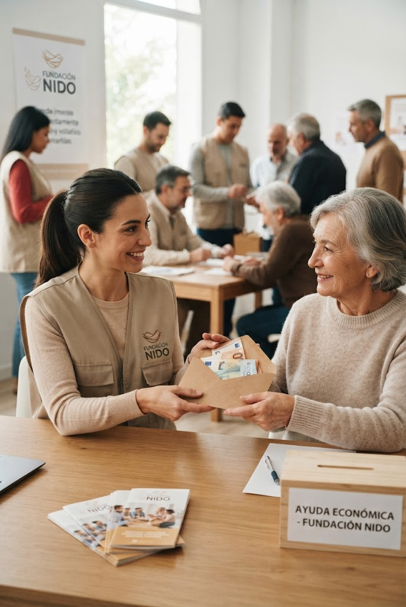
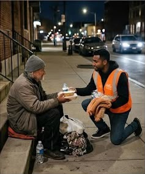
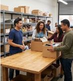
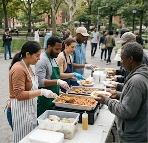
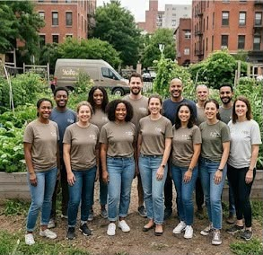
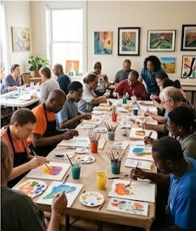
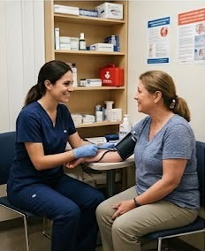
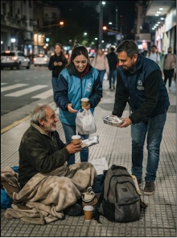
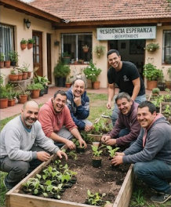
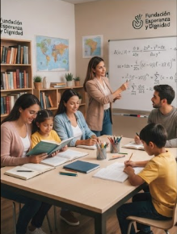

Somos una organización dedicada al apoyo a personas en situación de calle mediante alimentos, ropa, artículos de higiene y orientación para acceder a servicios.
BIENVENIDOS A NIDO
Cuidamos y apoyamos a personas en situación de calle.
Quiénes Somos
¿Qué puedo donar?

Cada donación, sin importar su tamaño, nos acerca a construir un futuro con más esperanza y mejores condiciones de vida.

Compartir tu tiempo, tus habilidades y tu corazón para ayudar a quienes más lo necesitan nos ayuda a crear un entorno más seguro y con más esperanza.

Cada prenda en buen estado puede hacer la diferencia y convertirse en una oportunidad para que alguien se sienta cuidado y protegido.

Ayuda a cubrir las necesidades básicas de quienes más lo necesitan. Cada alimento compartido es un acto de solidaridad que brinda apoyo.

Únete a nuestra fundación y ayúdanos a construir una comunidad más solidaria. No necesitas hacer grandes cosas para marcar la diferencia; tu compromiso y tus ganas de ayudar son un gran comienzo.

Cada voluntario aporta algo único. Al trabajar en equipo, podemos organizar actividades, brindar apoyo y crear un entorno donde las personas se sientan acompañadas y protegidas.
Tu disposición para ayudar puede mejorar el día de alguien. Con pequeñas acciones y trabajo en equipo, podemos brindar apoyo a quienes más lo necesitan y crear un ambiente de confianza y solidaridad.

Tu participación nos permite llegar a más personas y ofrecer ayuda a quienes atraviesan momentos difíciles.
Nuestra Fundación


